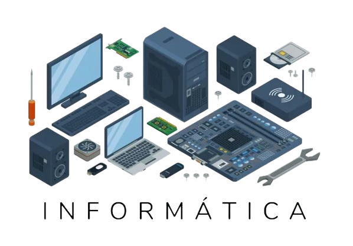
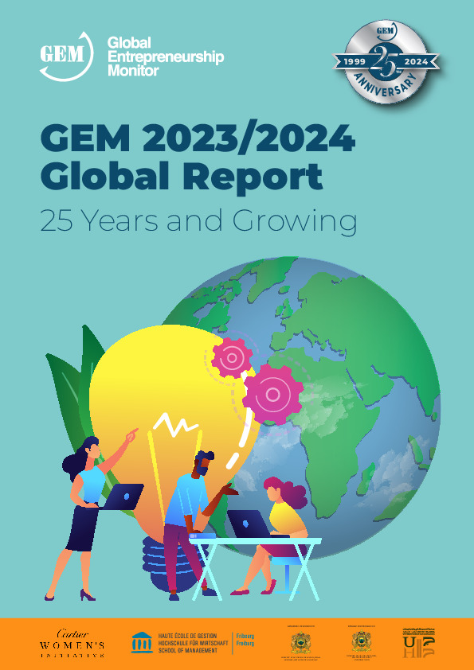

|  | Informática é um termo usado para descrever o estudo e o desenvolvimento das tecnologias de informação em prol das pessoas, organizações e sociedades. A informática é um campo do conhecimento que leva em conta as relações existentes entre as pessoas e a informação por meio da construção de interfaces, novas tecnologias e sistemas direcionados para a solução ou para a automatização de problemas. |
Atualmente, os conhecimentos de informática são cada vez mais necessários para que os indivíduos tornem-se tecnologicamente autônomos, uma vez que é crescente a adoção de interfaces e sistemas completamente informatizados. Os principais objetivos da informatização e da automatização, nesses casos, assim como acontece com os caixas eletrônicos, é a agilização dos serviços e a redução de ocorrências de falhas humanas . A informatização de eletrodomésticos e, até mesmo, de residências está cada vez mais presente em nossa sociedade. Essas mudanças são cada vez mais cotidianas e, por isso, é necessário que os nossos conhecimentos de informática sejam constantemente atualizados.
| Um grande exemplo de uma dessas mudanças que ocorrem nos eltrodomésticos do nosso cotidiano. A Geladeira French Door Family Hub™ RF27 564L possui tecnologia bluetooth, soundbar, acesso a internet, aplicativos de música, previsão do tempo e até inteligência artificial; além de contar com um sensor que reconhece a presença do indivíduo, diminuindo o gasto de energia. |
A informática teve seu início na história como uma precursora da revolução tecnológica , pois ela surgiu de uma dificuldade ou necessidade, quando um Francês denominado de Blaise Pascal, desenvolve a primeira máquina de calcular, a primeira calculadora, que, por sua vez, foi desenvolvida para realizar cálculos de algoritmos. Isso tudo ocorreu na década de 1642 com a invenção da primeira calculadora de algoritmos, neste momento se dá o ponta pé inicial para o desenvolvimento da informática no mundo. Entretanto, na antiguidade, houveram algumas revoluções e confecções de máquinas que levaram a construção do computador moderno do qual se conhece hoje, e também do conceito geral da informática. Por isto não se trata apenas da ideia de componentes eletrônicos e internet, mas sim do principal fundamento por trás do contexto geral, que é a informação e a automatização dos processos.
A hisória da informática é extremamente complexa e vasta, sendo composta por diversas máquinas e conceitos, ela vai desde o ábaco até o computador do qual conhecemos hoje, com diversas funções e diferentes utilidades, estando em qualquer dispositivo que pode-se imaginar. Caso queira se aprofundar mais na linha do tempo desse ramo tão presente na atualidade, clique nos links abaixo e conheça um pouco mais dessas máquinas e conceitos que consolidaram o que hoje chamamos de informática:
Lançado em 26 de julho pela Unesco (Organização das Nações Unidas para a Educação, a Ciência e a Cultura), o GEM Report 2023 sobre tecnologia na educação tem suscitado forte reação na comunidade educativa. Para alguns, o relatório apresenta uma visão negativa da tecnologia na educação ao destacar os riscos de aumento de desigualdade no acesso a oportunidades de aprendizagem, de empobrecimento de relações humanas e de perda de autonomia de professores e estudantes.
|  | O Global Entrepreneurship Monitor (GEM) é a principal pesquisa sobre empreendedorismo no mundo, que apresenta a evolução do empreendedorismo em dezenas de países. O trabalho ainda permite identificar os fatores críticos que contribuem ou inibem a iniciativa empreendedora, em cada país. O estudo mostra também as motivações para empreender, assim como a participação das mulheres, dos negros e dos jovens. |
É preciso compreender o contexto no qual o documento foi elaborado. Após a pandemia da Covid-19, governos de vários países estão dedicando boa parte do orçamento da educação para investimentos em tecnologia. Muitos desses investimentos estão sendo realizados com base em uma visão limitada e reducionista, sem considerar os elementos necessários para que a tecnologia tenha impacto positivo na educação e consiga reduzir desigualdades educacionais que persistem em todas as partes do mundo. A chave para entender a mensagem principal do relatório está em seu subtítulo, “Uma ferramenta nos termos de quem?”, que clama por uma maior participação da comunidade educativa na definição dos valores, princípios e processos que devem guiar o uso de tecnologia na educação. Elaborar políticas de educação digital que garantam acesso equitativo à tecnologia para todos os professores e estudantes, propondo conteúdos digitais e metodologias pedagógicas relevantes e apropriados para diferentes contextos – e contemplem formação de professores – exige competências complexas de formuladores de política e gestores de sistemas educacionais.
Segundo o relatório, as políticas de tecnologia educacional não devem ser definidas por empresas de tecnologia ou por futuristas que acreditam que toda tecnologia significa progresso positivo e é um fim em si mesma. Devem partir de uma visão pedagógica, centrada na aprendizagem e no bem-estar dos estudantes, e direcionada para reduzir as desigualdades educacionais. Nesse sentido, o levantamento identifica pontos críticos no uso da tecnologia na educação que devem considerados, como por exemplo:
O principal argumento do GEM Report 2023 é que o uso da tecnologia na educação deve ser adequado a cada contexto, inclusivo e equitativo, escalável e sustentável. Precisa ser definido nos termos da comunidade educativa ao colocar a aprendizagem e o bem-estar dos alunos no centro. A fim de cumprir esse importante papel, será preciso o desenvolvimento de novas competências e habilidades por gestores e educadores, e a criação de estruturas organizacionais que garantam a implementação ágil, eficiente e transparente dos recursos destinados à tecnologia educacional.